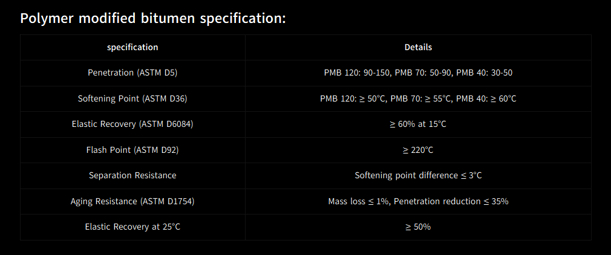

What Is Elastomeric PMB (Polymer Modified Bitumen)? – Iran Bitumen Supply Int │ IBSI
Elastomeric PMB, also known as Polymer Modified Bitumen, is a high‑performance bitumen produced by blending premium paving‑grade bitumen with elastomeric polymers, most commonly SBS (Styrene‑Butadiene‑Styrene). This modification dramatically improves the binder’s elasticity, flexibility, temperature resistance, and overall durability, making PMB one of the most advanced asphalt binders used in modern road construction. At Iran Bitumen Supply Int │ IBSI, Elastomeric PMB is engineered to deliver exceptional performance in regions exposed to heavy traffic, extreme temperatures, high shear stress, and intense loading cycles. The elastomeric polymers create a three‑dimensional network within the bitumen, allowing it to stretch and recover without cracking — a property conventional bitumen cannot achieve. PMB is widely used in high‑performance asphalt mixes, bridge decks, airport runways, highways, and industrial pavements, where long‑term durability and resistance to deformation are essential. In international standards (including India’s IRC:SP:53, EN 14023, and ASTM‑based markets), Elastomeric PMB is commonly produced in the following grades: PMB 40, PMB 70, PMB 120.
These numbers refer to elastic recovery and penetration characteristics, depending on the national standard:
- ✔ PMB 40 – Harder, stiffer grade for hot climates and heavy traffic
- ✔ PMB 70 – Balanced grade for moderate climates and general highways
- ✔ PMB 120 – Softer grade for cold climates and flexibility‑critical applications
Description of Elastomeric PMB – Iran Bitumen Supply Int │ IBSI
Elastomeric PMB is a premium modified binder designed to outperform conventional bitumen in every critical aspect of pavement performance. By incorporating SBS polymers, the binder gains exceptional elasticity, allowing it to stretch under load and return to its original shape without cracking. This makes PMB ideal for roads exposed to heavy traffic, sharp temperature variations, and high shear forces. Unlike standard bitumen, which becomes brittle in cold weather and soft in high heat, Elastomeric PMB maintains stability across a wide temperature range. It resists rutting in hot climates, prevents thermal cracking in cold regions, and significantly improves fatigue life. These advantages make PMB the preferred choice for long‑life pavements and high‑value infrastructure.
Applications of Elastomeric PMB
Elastomeric PMB is used in demanding construction environments where superior performance is required. It is widely applied in the construction of highways, expressways, and industrial roads that experience continuous heavy traffic. Its enhanced elasticity makes it ideal for bridge decks, intersections, roundabouts, and steep gradients, where asphalt is subjected to constant braking and turning forces. In the aviation sector, PMB is used for airport runways and taxiways, where pavements must withstand extreme loads and temperature variations. It is also used in waterproofing membranes, roofing systems, and industrial coatings due to its excellent adhesion and resistance to aging.
Properties of Elastomeric PMB
Elastomeric PMB is defined by its superior elasticity, high softening point, and improved resistance to deformation. The addition of SBS polymers increases the binder’s viscosity and enhances its ability to withstand high temperatures without rutting. Its elastic recovery is significantly higher than conventional bitumen, ensuring long‑term flexibility and resistance to cracking. PMB also exhibits excellent adhesion to aggregates improved resistance to water damage, and enhanced fatigue life. These properties make it ideal for pavements exposed to repeated loading cycles, temperature fluctuations, and harsh environmental conditions.
Packing Options for Elastomeric PMB
At Iran Bitumen Supply Int │ IBSI, Elastomeric PMB is available in New steel drums, Bitubags, Bulk shipments via bitumen carriers, Tanker trucks for direct delivery to asphalt plants. These packaging options ensure efficient handling and uninterrupted supply for large‑scale infrastructure projects.

Specification of Polymer Modified Bitumen